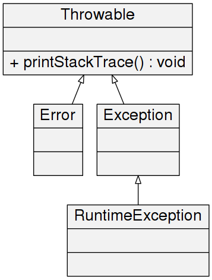
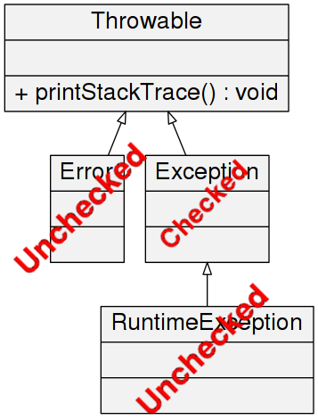
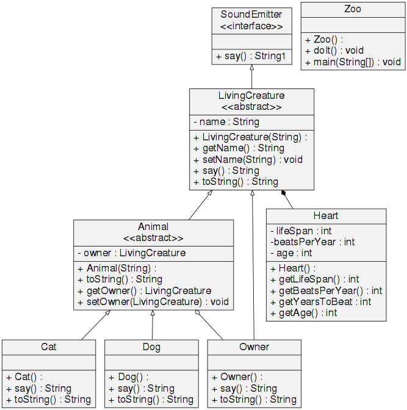

Topics for Today
Write your own enum type. Describe when you would use it.
Write code to show exception handling including examples of checked,
unchecked, and Error exceptions.
Show how to use a common piece of logic from two different classes.
Create and overload constructors.
Enums: Have You Seen Something Like This?
public class PaperType extends AbstractType implements Serializable {
private static final Map NAME_MAP = new HashMap();
/**
* String constant.
*/
public static final String MALE_STR = "MALE";
/**
* String constant.
*/
public static final String FEMALE_STR = "FEMALE";
/**
* String constant.
*/
public static final String COUPLE_STR = "COUPLE";
/**
* String constant.
*/
public static final String EITHER_STR = "EITHER";
/**
* Male paper type.
*/
public static final PaperType MALE = new PaperType(MALE_STR);
/**
* Feale paper type.
*/
public static final PaperType FEMALE = new PaperType(FEMALE_STR);
/**
* Couple paper type.
*/
public static final PaperType COUPLE = new PaperType(COUPLE_STR);
/**
Enums: When to use them?
- Types are a good example
- If you have several options, as in a switch statement. (flip side: Really think if you should use real types)
if(paperType.equals(org.familysearch.temple.types.PaperType.COUPLE_STR)){
// do stuff with couple paper type
}
else if(paperType.equals(org.familysearch.temple.types.PaperType.FEMALE_STR)){
// do something else
}
switch (paperType) {
case COUPLE:
break;
case FEMALE:
break;
}
- Clean label
- If the only thing that is different is the type,
don't use real types (think of switch with instanceof)
Enums: Interesting Points
Exceptions: How to use them
Use exceptions only to handle situations when something unexpected happens, not to control
flow
Should you throw an exception when:
- No results found
NO
- an input parameter is null
sure (an IllegalArgumentException)
- You called another API and they gave you a
null
NO
- You called another API and they threw an
exception
MAYBE
- You want to return an error
NO
Exceptions: Class diagram

Exceptions: Checked vs. Unchecked

Exceptions: Checked
- Handling enforced at compile time
- Used when you can expect the client to be able
to do something about the exception
- FileNotFound (IOException)
Exceptions: Unchecked
- Not enforced at compile time
- Used when you can't expect the client to be abl
e to do something about the exception
- NullPointerException (Don't ever use this)
- Docs
Exceptions: Error
- Unchecked
- OutOfMemory, StackOverflowError
- Docs
- Usually stuff you can't do anything about.
Hardware things.
- Should you even try to catch it? If you think
you can do something about it (clean up resources?)
Classes: Inheritance
- "Is-a"
- Dog is an Animal, Dog inherits from animal
- Child class also has the public and
protected attributes and methods of the parent.
- Child cannot access the private stuff.
Classes: Composition
- "Has-a", "consist-of"
- A LivingCreature has a heart.
- True composition: same life cycle
- Aggregation: Dog has an owner (could change)
Classes: Static
- "Should-a-avoid-a"
- if it is simple, pure, then go ahead. If it is complex, has side effects, please don't
- Cannot be easily mocked in unit tests
- Can be called without creating an instance (object) of the
class
Classes: class Diagram
